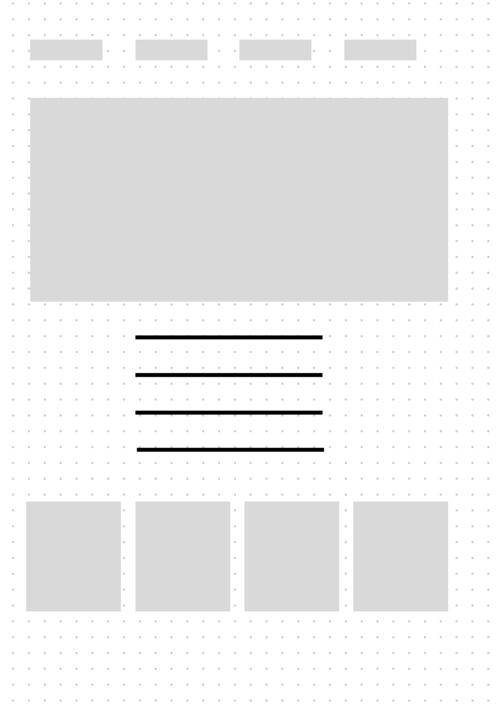

Site Name
Atacama Chamber of Commerce
Proposed name: Atacama Chamber of Commerce.
This name was selected because it reflects the region (Atacama, Chile) and the goal of promoting local businesses through the Chamber of Commerce platform.
Site Purpose
The Atacama Chamber of Commerce site aims to provide a platform for local businesses to network and promote their services. The site will focus on supporting regional economic development, fostering tourism, and providing valuable information to residents and visitors alike.
It will also serve as a resource for local events, business spotlights, and community growth initiatives.
Scenarios
- What business networking events are taking place in Atacama this month?
- How can I contact the Chamber's board of directors for business-related inquiries?
- What is the current demographic and population growth in Atacama?
Color Scheme
Selected colors:
- Payne's Gray: For headers and main elements to represent professionalism.
- White Smoke: For background and body text to create a clean, readable layout.
Visit my palette for more color details.
Typography
Selected fonts:
- Roboto: For both headers and body text to maintain readability and modern aesthetics.
Wireframe
Here you would include a simple sketch of the site's design for both mobile and desktop views.
Mobile and Desktop Views
